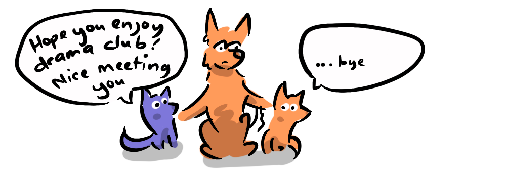
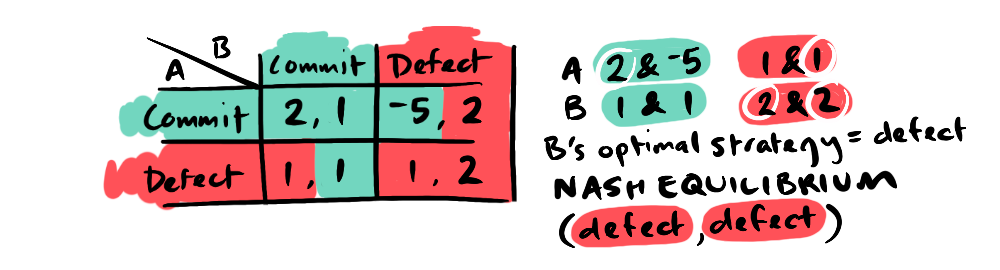
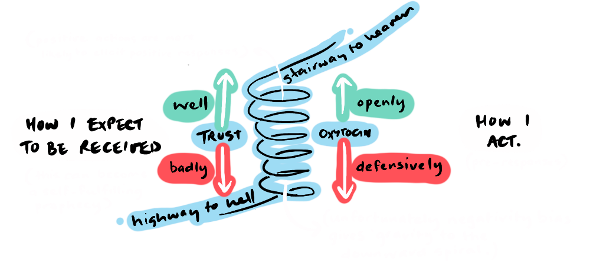
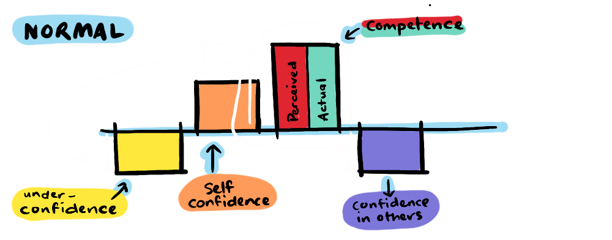
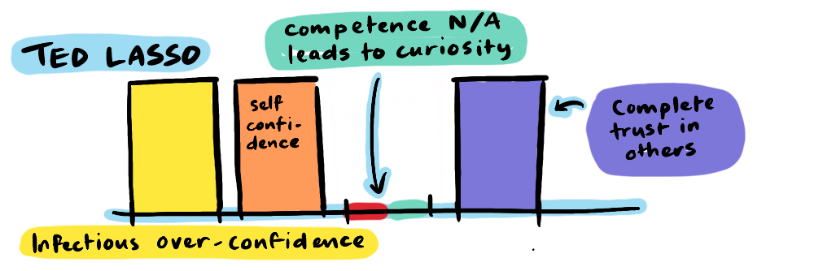

Confidence is multifaceted and plays out in our lives in different ways. We can feel confident, we can confide in others, we can try to bolster our own self-confidence. But what is it really? Game Theory suggests that confidence has a lot to do with our trust in others. I'd like to make a case that, when looked at from this perspective, it becomes a moral imperative to be confident... in others.
Quick note: not a psychologist, this is largely speculative hokum.
I've found myself saying to my daughter lately...
"Being shy is not an excuse for being rude."
As far as I know it's an original—I don't know where it came from, it's not something I heard as a child. So, I've wanted to interrogate why this message is something I want, so strongly, to impress upon my daughter, who is a brilliant child (I'm not biased), loving, kind, funny, intelligent and yes, polite.
But, I have noticed that, when she feels self-conscious, she sometimes forgets her manners.
We're lost, and a confident young girl around the location of my daughter's theatre program offers to lead us to the hall. On the walk there, my daughter shuts down. I try to stimulate conversation (super helpful, right?), but she is paralyzed by shyness (nothing to do with her skibidi dad's prompts).

Part of the reason it's important to me, is that I find I do the same thing myself. I'll ask someone's name and, in the nervousness of the moment, immediately forget it.

At my first Q&A at a film festival, my long-suffering cameraman was in the audience, but in my eagerness to come across as a confident young director, I clean forgot to mention him (his less-than-subtle disappointment was evident at drinks afterwards). I now take part Toastmasters and have to work really hard to adhere to the honorifics and acknowledgments. I struggle to escape the inward gaze. I want to help my daughter form habits that make concern-for-others second nature, despite her nerves.
Meanwhile, I've been exploring the idea of confidence in Game Theory. In Jaiveer's post on the Discount Factor, he touched on how confidence in another player's cooperation influences our own actions. If we trust that another player will cooperate, then we are likely to cooperate. In the real world, this could manifest in a situation where, if I think you'll like me, I'll be more confident to risk making myself vulnerable to you, by being kind, or extending a handshake, or saying "thanks".
This can play out in a particular payoff matrix:

In this situation, player A is in a position of vulnerability. If both players cooperate, they both get the best payoff (2,2), but if player A cooperates and player B defects, then player A takes a big loss (-5,1). But if we look at the payoffs for player B, they always benefit from cooperating (2 points for cooperating, 1 point for both defection scenarios), so player A should be confident that player B won't defect. I'd argue this situation is one we often face in our lives.
To put this in real world terms, imagine you (player A) are delivering a humorous speech to an audience (player B). If both players commit to their roles (cooperate); you (A) commit to the speech, and the audience (B) allow themselves to laugh freely, both will get the best payoff. You will be pleased with your performance, and the audience will enjoy themselves (2,2). If you fully commit but the audience are overly critical and withhold genuine laughter (defecting), this may lead you to crash and burn—a huge embarrassment for you the speaker, and a disappointing experience for the audience (-5,1). If you defect (by not committing, or burying your head in the script) you will be disappointed with your performance, and the audience may not be entertained, depending on how committed they are to enjoying themselves (1,1 or 1,2).
The Nash Equilibrium for this situation is for both parties to commit, despite the severity of the risk of rejection for player A. If, however, we switch B's payoffs so they get two for defecting, and one for committing, this not only changes the strategy for player B but it also affects player A's strategy, leading to a (defect, defect) Nash Equilibrium.
This is a very technical way of saying that, if you know your opponent isn't motivated to cooperate, you're less likely to cooperate yourself. In these sorts of situations in the real world, where we feel vulnerable, it makes game-theoretical sense that our self-confidence is dependent on our level of trust (or confidence) in the other person.
It turns out that evolution has learned this lesson already. In Robert Sapolsky's Behave he explains how...
"Oxytocin elicits pro-social behaviour, and oxytocin is released when we experience pro-social behaviour."
He then explains that investors who were given oxytocin were inoculated against betrayal aversion. This shows the physiological connection between trust and pro-sociality. Sapolsky goes on to describe the corollary that our oxytocin levels are inhibited in response to antisocial behaviour or aggression—which makes us less pro-social in turn. So, we have a downward spiral situation on our hands, meaning it's important that we avoid genuine negative interactions with others.
But it's also important not to imagine negative experiences with others. As we explored in Negative Moral Licensing, our imagined expectations regarding the moral behaviour of others can justify negative behaviour in ourselves. This is not only continuing a downward spiral, but in fact beginning one, purely out of our imagination. It's something we are prone to do because evolution has also gifted us with a negativity bias—because in our evolutionary history it was more important to avoid negative experiences than it was to court positive ones (because negative experiences could mean death).
The message I seemed to be sending my daughter (and myself) was that we should push past our lack of confidence in order to pay the other person proper attention or gratitude. But now I realise, taking the game theoretical vulnerability involved, our negativity bias, and our physiological response to real and perceived threats (through oxytocin), that this is an uphill battle. Perhaps the answer might not be to push through the nerves, but to actually become more confident—less self-conscious, leaving us more bandwidth to focus outwardly.
Of course, just "being more confident" is easier said than done.
While self-confidence can come in many forms, on the most basic level, self-confidence is a natural result of competence; as we gain skills in an area, we naturally become confident using those skills and talking shop in that area. But this is not the only way to be confident. It's possible to have an innaccurate sense of how much competence we have, making us more or less confident, and we can be affected by the level of trust we have that others will appreciate that competence. I understand this with a couple of made-up formulas:
- Self-confidence = perceived competence + trust in others
- Over-confidence = perceived competence - actual competence + trust in others
Let's explore these dynamics with some not real graphs.
Above is my best approximation of what normally goes on in unfamiliar interactions. The lack of trust in others diminishes our confidence in how we will be received, leading us to be more self-conscious and therefore inwardly focused in our interactions with people. One could imagine that someone could suffer from severe self doubt if they also had an innaccurate under-estimation of their own competence.

But what about the opposite? At this point, some readers might be thinking I'm overstating the virtues of confidence, given our experience with some people who project high levels of self-confidence. After all, people who have a very high opinion of themselves are often insufferable, and far from being more considerate of others, seem primarily concerned with themselves. We've all met people like this—they're called narcissists.
The narcissist also has a sort of confidence because they have no concern for the experience of others, and so they are not affected by a fear of rejection. There is also the approach of the bore, who, in an unfamiliar setting, retreats to their own field of expertise to deliver a lecture that is of interest to no one—which is sometimes just the topic of "me". We see this in children too who can't help but rabbit on about their latest video game without any concern for whether it's of interest to anyone else (it turns out it is of interest to me, but that's just me—as I enjoy finding life-lessons in unlikely places). This is a sort of blind self-confidence that often doesn't lead to connection.
I would suggest there's a healthier way to increase self-confidence, and that is by fostering trust in others. If we think about the situation where we are self-confident because we are competent, our feeling of self-confidence is derived from our own abilities, but it is also a confidence that, because we genuinely have something of value to offer, others will appreciate our contribution. In this way, this feeling of self-confidence is ultimately a natural level of trust that we will be received positively by others—I can trust others' reactions will be positive because I'm really good at this
Acknowledging that we can't always be competent in every area, and that we have a negative bias regarding how we will be received, our task becomes to employ reason to more accurately predict how we will be received by others. It is the resulting increased confidence in others that is most likely to lead to the best payoff in the game-theoretical sense.
Take the humorous speech for instance. We can worry that no one will laugh, but as soon as we realise that people coming to a humorous speech have come wanting to laugh, all we have to do is make sure we give them the opportunity to. We can recognise that our mutual benefit makes the downside risk highly unlikely. We might have seen a comedian being heckled, but when we realise that that professional comedian has the skills to deal with a heckler in a funny way, we begin to realise that even the heckler is on the comedian's side, giving them the opportunity to deliver a comeback that is often the highlight of the performance.

Finally, an interesting inversion of narcissism is the character of Ted Lasso, who, on the surface, appears blindly self-confident but is actually in a situation where he has no competence (he's never coached football) and is suffering through a painful divorce (the worst sort of rejection). Yet, he copes with these inadequacies by being entirely outwardly focused. He bakes biscuits for his boss, takes a genuine interest in the life of every person he comes across, and seeks to understand and help everyone reach their potential.
Despite constantly being called a "wanker" and treated as a joke, his unwavering trust in others eventually wins the day. He is, in a word, "charming"—and throughout three seasons succeeds in charming... everyone. In game-theoretical terms, Ted's negative payoff for rejection is insignificant*.
"Be curious, not judgmental"
- Ted Lasso (paraphrasing a mis-attributed Walt Whitman).
On reflection, my insertion of myself into the interaction between my daughter and the helpful stranger probably didn't help. She's getting to that age where her most embarrassing attribute is... dad. And I have realised that what I really want to communicate to her isn't "Push through your nerves" or even "Be more self-confident" but rather "Trust that people will like you and don't worry too much if they don't, so that you can really be present with them."
Committing to the performance, the handshake, the conversation, is the best way to achieve the best payoff, and failure is never as world-ending as it seems. But, if I'm being entirely honest, this is more a lesson for me than for her—I've been projecting my own self-conscious paralysis onto her when I have plenty of data points that show she'll be just fine.
Game Theory shows us that our own behaviour rationally follows from our level of confidence in others, and our biology reflects this—though with an out-weighed influence given to threats, meaning we need to think rationally to get around our instincts.

The humorous speech contest was not just a hypothetical; I actually took part in one a couple of months ago. It was the realisation that the other toastmasters would want to enjoy themselves that gave me freedom to focus on giving them something to laugh about. I trusted them, and the trust was rewarded. And that's why the downward spiral is not inevitable, because people are actually nicer than our biological hardwiring would have us believe. So, the more trust we extend, the more confident we become in others, and consequently in ourselves (a virtuous cycle). And my hope is that this helps me to really be present with others, to listen without self-consciousness, and remember what is important to them, including their name.